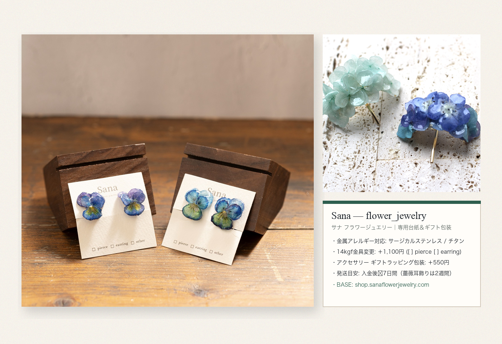

オリジナル台紙（S__52355083_0.jpg）＆ ギフトラッピング包装（＋550円）
支給写真 S__52355083_0.jpg の『Sana / flower_jewelry』専用台紙（下部に □ pierce □ earring □ other 印字）のミニマルで美しいフォルムをそのまま活かし、アクセサリーのギフトラッピング包装（＋550円）やマルシェ・POPUPでのお渡し・BASE通販発送に対応する深さ32mmのボックス仕様としています。

寸法・素材・ギフト包装仕様（K1〜K10準拠）
| ブランド表記 | Sana — flower_jewelry（サナ フラワージュエリー） |
|---|---|
| 専用台紙サイズ | W 55mm × H 75mm（コットンマット紙・スリット加工） |
| 金具素材・チェック欄 | 金属アレルギー対応（サージカルステンレス／チタン）、14kgf（＋1,100円）｜□ pierce / □ earring / □ other |
| ギフトラッピング | アクセサリーはラッピング包装有り（＋550円） |
| 発送目安 | ご入金後〜7日間（✴薔薇のピアス・イヤリングは2週間） |
| 公式ショップ（BASE） | https://shop.sanaflowerjewelry.com |
| 展開図データ | 下部 SVG展開図（packaging_dieline.svg）参照 |
ギフトボックス＆専用台紙 展開図（SVG Dieline / 1:1 比率）
実線（#1E242B）＝カットライン ／ 破線（#2E5E4E）＝山折り・谷折り線